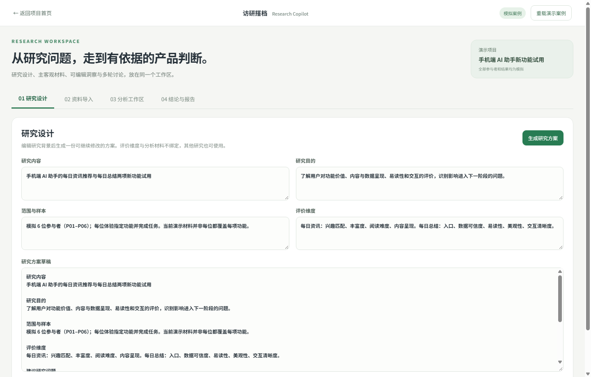
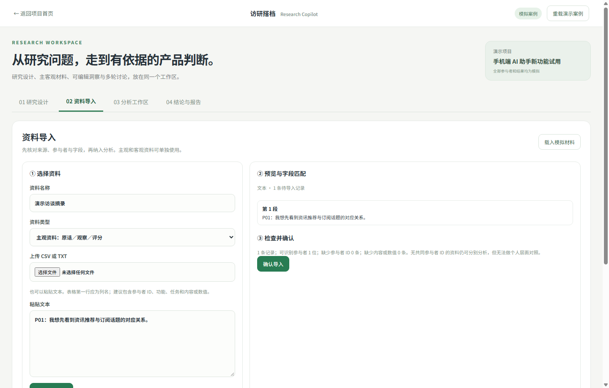
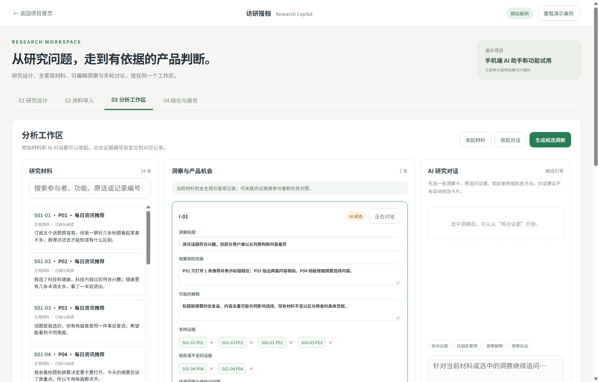

访研搭档 Research Copilot
面向用户研究员和产品经理的研究工作台。把研究方案、主客观材料、证据追溯、洞察复核、产品机会和报告整理放进一条可编辑的工作流。
项目背景与目标用户
用户研究员和产品经理常同时处理访谈原话、任务观察、评分和研究假设。材料散落在多个文件时，洞察容易脱离出处，主观解释也容易与观察事实混在一起。工具面向需要快速整理材料、但必须保留研究判断权的使用者。
产品目标与设计原则
输入研究内容、目的、范围样本和评价维度，输出可编辑研究方案；导入主观材料、客观材料或两者之一，生成候选分析。每一条洞察都应能回到原始记录，并区分支持证据、相反案例与仍需核对的解释。
核心体验流程
建立研究问题 → 编辑方案 → 导入 CSV、TXT 或粘贴内容 → 检查字段映射、参与者 ID 与缺失情况 → 在分析工作区查看证据和候选洞察 → 与 AI 围绕当前材料多轮追问 → 研究者确认、修改或驳回 → 从已确认洞察整理产品机会与报告。
关键界面与功能
三张真实界面截图对应研究设计、资料导入和分析工作区。图中参与者与材料为模拟案例，重点展示资料如何进入分析，以及研究者在何处核对和修改 AI 候选内容。
研究设计：先定义问题
填写研究内容、目的、样本和评价维度后生成方案草稿；生成结果仍在输入框内，可继续编辑，避免一键结果替代研究设计。

资料导入：先核对来源
主观与客观资料可分别导入。图中演示了文本粘贴后的预览、参与者识别与导入前检查；CSV 还支持字段映射。

分析工作区：证据与判断并行
左侧保留原始记录，中间编辑洞察、支持和相反证据，右侧进行研究对话。点击证据编号可回到原记录，洞察确认和机会取舍由研究者完成。

Vibe coding 与实现
先定义输入输出、资料结构、人工复核状态和页面流转，再使用原生前端与 Node.js 完成可运行原型。工作区支持本地存储；服务端持有火山方舟 Key，调用已配置的 DeepSeek 模型。离线模式使用预置资料与规则，方便展示不依赖模型的研究流程。
演示案例与当前边界
内置一套虚构的手机端 AI 助手试用案例：6 位虚构参与者、24 条记录，覆盖每日资讯推荐和每日总结。数据及分析结果只用于演示证据核对和产品判断流程，不代表真实实习资料、真实用户表现或上线验收结论。
SEO GEO做好